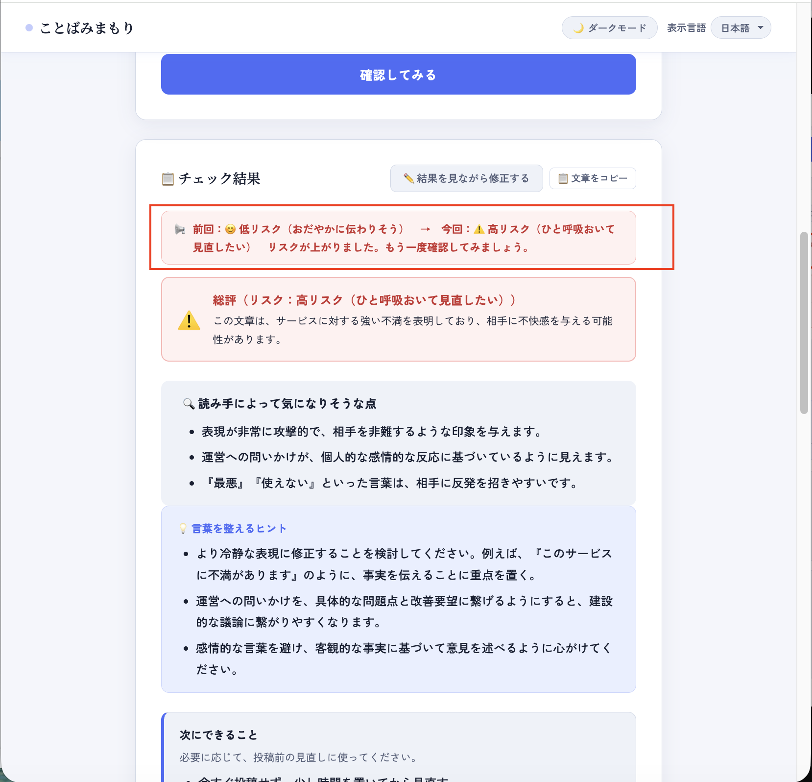
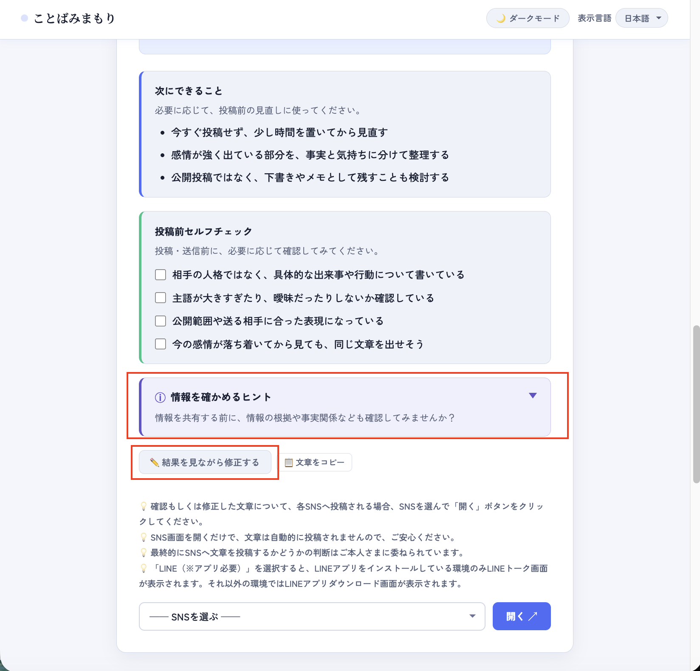
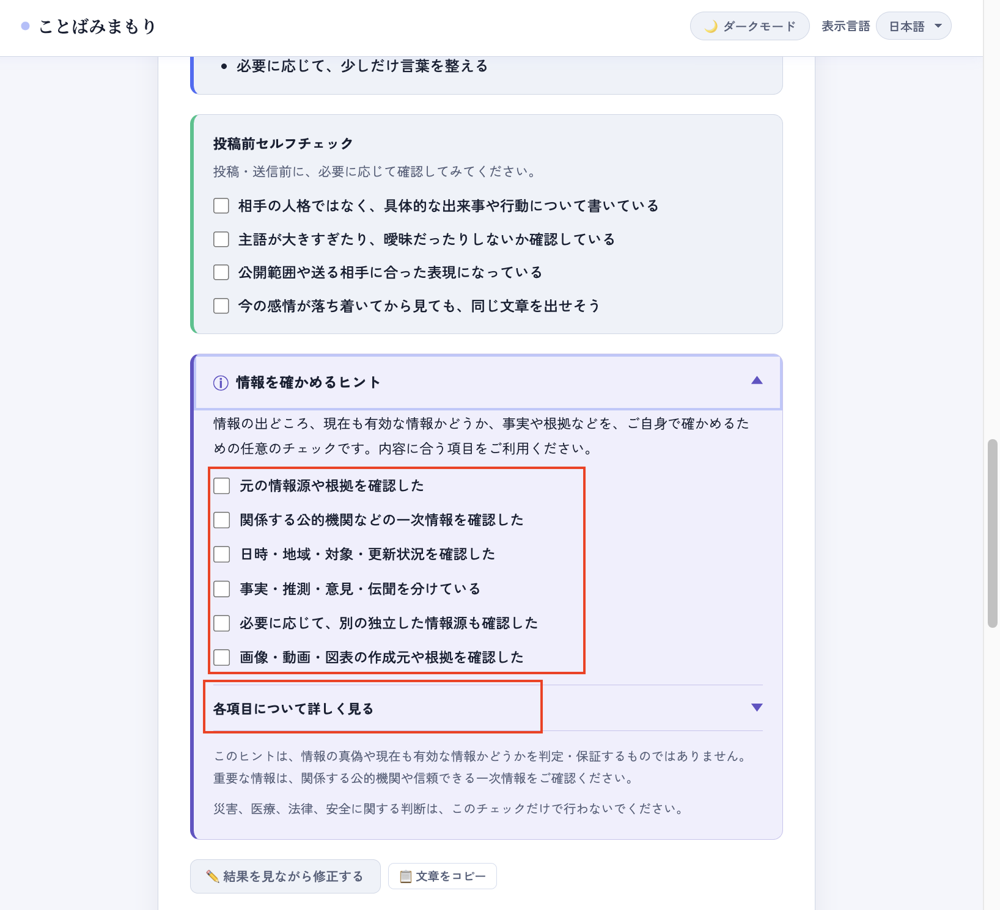

Kotoba Mimamori helps you review wording before posting on social media. This manual explains the basic flow and situations where the tool can be useful.
How-to video
You can watch a short video that shows the basic flow of using Kotoba Mimamori.
If the video does not appear, open the how-to video on YouTube.
When to use it
This tool is not for restricting language or deciding right and wrong. It is a helper for moments when you want to gently review wording before posting.
- Before posting on social media, when wording may sound too strong.
- When emotions are high and you want to reread before sending.
- When you want to make sure your intent is clear.
- When you want to soften a draft.
- When you want advice that fits a scene such as a post, reply, work request, or apology.
- When you want to choose the tone of advice, such as balanced, gentler, or business-like.
- When you are writing text and want hints for making the wording easier to receive.
- When your usual AI tool is unavailable and you still want to review text before posting.
Open Kotoba Mimamori
When you open the service, the main page appears. You can switch between light mode and dark mode from the top-right button.

Click Dark Mode in the upper-right area.

Click Light Mode to return to light mode.
- You can switch between light mode and dark mode whenever you need.
Enter the text you want to check
Enter a draft post, reply, comment, message, or other text you want to review. Short text is fine too, and you can also use it before sending work messages or other written communication.

Type or paste the text you want to check.
- Short text and longer drafts can both be checked.
- Input text is not stored in the tool.
- Click Copy text below the input area to copy the current text to your clipboard.
- You can also copy the current text from the result area or result editor if needed.
Choose a scene and tone, then run the check
After entering text, choose a usage scene if helpful. You can adjust the viewpoint for a social media post, reply or comment, work request, apology or explanation, and more.
If you are unsure, you can keep the default general setting. You can also choose the advice tone. The default balanced tone is fine for most checks.
When you are ready, click Check my text to display AI-assisted reference information.

After entering text, click the check button.
- If the text area is empty, enter text before running the check.
- Results may take a little time to appear.
- Check results are provided in the selected display language.
- The general scene checks the whole text in a balanced way.
- The balanced tone is useful when you want to review how the wording may be received overall.
- The gentler tone is useful when you want the wording to feel softer and more approachable.
- The polite or business-like tone is useful for work or formal situations.
- The selected tone affects the direction of suggestions. It does not automatically create a finished post.
Use the result as a reference and revise if needed
The result shows an overall risk label, points that may concern readers, wording tips, next actions, and a pre-post checklist. Risk labels are shown with gentle explanations, such as low risk, medium risk, and high risk. Action buttons for editing while viewing the result and copying the current text are shown near the result and again below the checklist.
From the second check onward, a risk change banner shows how the latest result compares with the previous check. This makes it easier to see whether your revisions helped reduce the wording risk.

Use the result as a calm reference before posting. Click Edit while viewing result if you want to revise your text.

A self-checklist is also shown, with edit and copy buttons below it.

When revising the text while reviewing the verification results, make the edits in the editing area displayed at the bottom of the results.
Clicking the "Re-check revised text" button allows you to review the text again after the revisions.
If you want to copy the corrected text, click the "Copy text" button nearby.

Once again, the results of the text review will display risks, points likely to concern readers, tips for refining the wording, and suggested next steps.
From the second check onwards, the results of the comparison with the previous check (risk change banner) are also displayed.

You can edit the text by clicking the ✏️ "Edit while viewing result" button located below "Self-check before posting."

You can edit the input text by clicking the ✏️ "Edit while viewing result" button.
Clicking the "🔍 Recheck edited text" button updates the verification results based on the revised text.
- The result is reference information and does not guarantee accuracy or completeness.
- The final decision about whether to post remains yours.
- Click Edit while viewing result near the result or below the checklist to show an editor under the result.
- The editor is filled with your current text, so you can revise it while keeping the result nearby.
- Edits in the result editor are also reflected in the main input field.
- Click Recheck edited text to run the check again with the revised text.
- Use Copy text near the result, below the checklist, or under the editor to copy the current text.
- The pre-post checklist is optional. Existing functions such as choosing a social media service remain available even if you do not use it.
- The checklist state is not stored and is not sent outside the page.
Open a social media service if you want to post
After reviewing your text, you can choose a service and click Open. The tool only opens the selected service. It does not post your text automatically.
If you click Open LINE, the LINE talk screen opens only in environments where the LINE app is installed. Otherwise, the LINE app download page may open.

Choose a service from the list.

Select the service you want to open.
- Opening a service does not automatically post your text.
- Supported destinations include X, Threads, Instagram, Facebook, TikTok, LINE, LinkedIn, and YouTube.
Example: opening X
If you choose X and click Open, the X posting screen opens. You can then decide whether to paste and post your text yourself.

The tool opens X, but it does not post automatically.
Notes for safe use
- The tool is free.
- No login or user registration is required.
- No app installation is required.
- Input text is not stored in the tool or on the server.
- Please see the Terms and Disclaimer for details.